Blue-dot margined
flatworm
Pseudoceros
indicus*
Family
Pseudocerotidae
updated
Feb 2020
Where
seen? This little flatworm with blue dots on its body margin is often seen on many of our
shores. On rocky shores, on boulders and under stones, also near reefs.
Features: 2-3cm long. Body uniformly white or cream with closely-set dark blue dots along the
body margin. When the worm is contracted, the dots merge so the worm appears to have a solid blue margin. The
body margins are only slightly ruffled when the worm is in water.
It has a pair of pseudotentacles at the front made up of simple folded
edges of the body. |
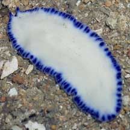
Pulau Sekudu, Jul 05 |
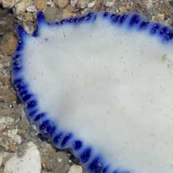
Front end of the worm. |
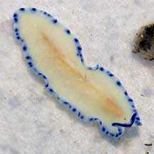
Faint line in the centre is the intestine showing through the body.
Pulau Hantu,
Mar 06 |
Sometimes a faint central stripe is seen. This is the intestine that shows through the body and is not an identifying mark for the worm species.
The worms have been observed enveloping spherical objects. Could they
be eating the Yellow clustered
bead ascidians (Eudistoma sp.) that grow on the rocks?
They have also been seen on Beige
sheet ascidians. |
|
|
|
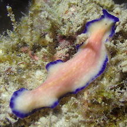
Pinkness from something it ate?
Big Sisters Island, Feb 26
Photo shared by Jianlin Liu on facebook. |
*Tentative
identification. Species are difficult to positively identify without close
examination.
On this website, they are grouped by external features for convenience of
display.
| Blue-dot margined flatworms on Singapore shores |
| Other sightings on Singapore shores |
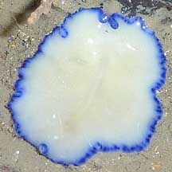
Beting Bronok,
Jun 10
Photo shared by Loh Kok Sheng on his
flickr. |
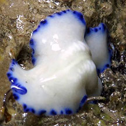
Pulau Sekudu, Jun 17
Photo shared by Jianlin Liu on facebook. |
|
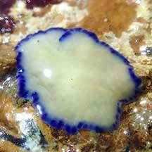
Berlayar Creek, Oct 21
Photo shared by Jianlin Liu on facebook. |
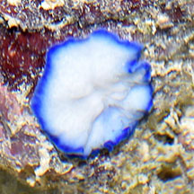
Sentosa Tg Rimau, Aug 20
Photo shared by Loh Kok Sheng on facebook. |
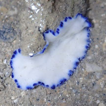
Sentosa Serapong,
May 16
Photo shared by Ian Siah on facebook. |
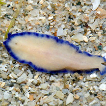
Seringat-Kias, Nov 14
Photo shared by Marcus Ng on facebook. |
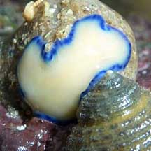
Pulau Tekukor, May 10
Photo shared by Loh Kok Sheng on his
blog. |
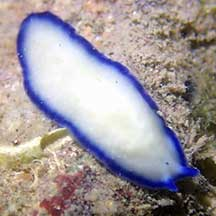
Pulau Tekukor, Aug 21
Photo shared by Jianlin LIu on facebook |
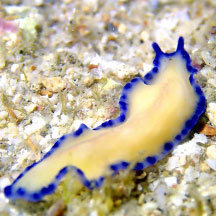
Big Sisters Island, Jan 20
Photo shared by JIanlin Liu on facebook. |
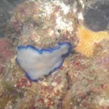
Sisters Island, Aug 09
Photo shared by Neo Mei Lin on her
blog. |
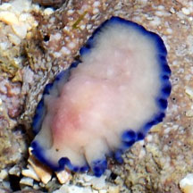
Terumbu Selegie, Jan 17*
Photo shared by Loh Kok Sheng on his blog. |
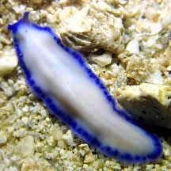
Pulau Jong, Aug 21
Photo shared by Jianlin LIu on facebook. |
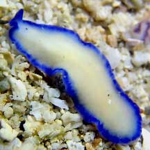
Pulau Hantu, May 22
Photo shared by Jianlin Liu on facebook. |
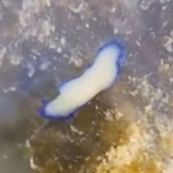
Terumbu Hantu, Aug 22
Photo shared by Che Cheng Neo on facebook. |
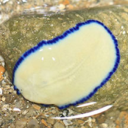
Pulau Semakau, Aug 14
Photo shared by Russel Low on facebook. |
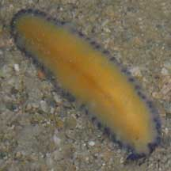
Terumbu Raya, May 10
Photo shared by Toh Chay Hoon on her
blog. |
|
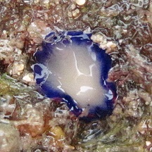
Terumbu Semakau, Dec 11
Photo shared by James Koh on his
blog. |
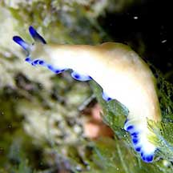
Terumbu Semakau, Apr 21
Photo shared by Jianlin Liu on facebook. |
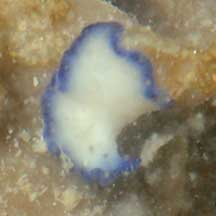
Pulau Salu, Apr 21
Photo shared by Toh Chay Hoon on facebook. |
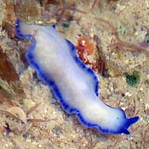
Beting Bemban Besar, Apr 10
Photo shared by Loh Kok Sheng on his
flickr . |
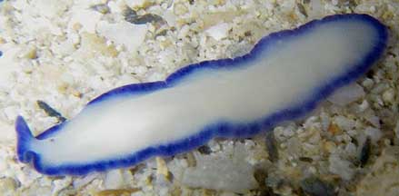
Terumbu Bemban, Jun 10
Photo shared by Toh Chay Hoon on her
blog. |
Acknowledgement
Grateful thanks to Leslie H. Harris of the Natural
History Museum of Los Angeles County for comments on this worm
and its identification.
Grateful thanks to Rene Ong for sharing details and identifying the flatworms on this page.
Links
- Pseudoceros
indicus on Encyclopedia of Life, LifeDesks, Marine Flatworms
- Polycladida: Technical fact sheet.
References
- Rene S.L. Ong and Samantha J.W. Tong. 29 October 2018. A preliminary checklist and photographic catalogue of polyclad flatworms recorded from Singapore. Nature in Singapore 2018 11: 77–125
- D. M. Bolaños, B. Q. Gan & R. S. L. Ong. 29 Jun 2016. First records of pseudocerotid flatworms (Platyhelminthes: Polycladida: Cotylea) from Singapore: A taxonomic report with remarks on colour variation.(pdf) The Raffles Bulletin of Zoology Supplement No. 34: 130-169 Pp. 130-169.
- Chim C. K., R. S. L. Ong & Gan B. Q. Penis fencing, spawning, parental care and embryonic development in the cotylean flatworm Pseudoceros indicus (Platyhelminthes: Polycladida: Pseudocerotidae) from Singapore. 10 July 2015. The Comprehensive Marine Biodiversity Survey: Johor Straits International Workshop (2012) The Raffles Bulletin of Zoology 2015 Supplement No. 31, Pp. 60-67.
- Newman, Leslie
and Lester Cannon. 2003. Marine
Flatworms: The World of Polyclads.
CSIRO Publishing. 97pp.
|
|
|